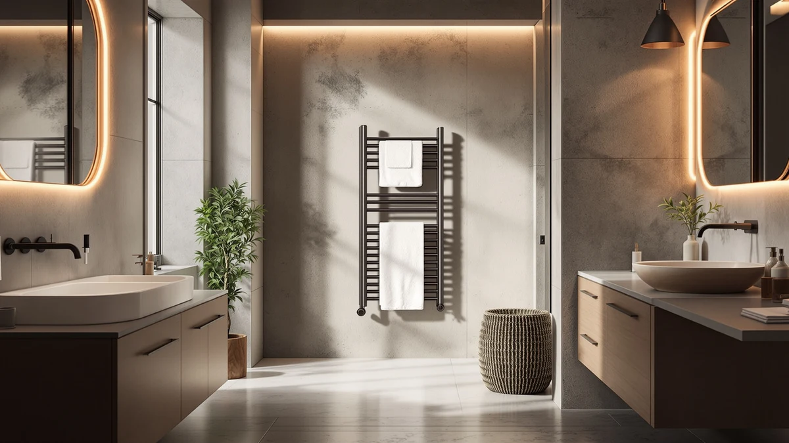

Trjikag Heated Towel Racks Review (2026): Worth It?
Prices and picks verified as of November 2026. Independent, reader-supported reviews.


Quick Answer
This trjikag heated towel racks review compares the TRJIKAG Heated Towel Racks 4 Bars against three alternatives on price, heat range and build quality to help you land on the right towel warmer for around $130. The TRJIKAG's wide, densely packed bars and 100 to 140 degree adjustable heat make it the strongest all-around pick, though the Live Fine, sawlece and Paris Hilton models below are worth a look if a different format fits your bathroom better.
Our pick: Heated Towel Racks 4 Bars — $129.99 Check Price on Amazon
Bottom line: our top pick is the Heated Towel Racks at $103.99.
Things to Know Before You Buy
- Price: in this trjikag heated towel racks review, all four options cluster tightly between $127.35 and $129.99, so price alone won't decide the winner.
- Heating method differs: the TRJIKAG and sawlece are bar-style racks with adjustable temperature controls (100-140°F and 110-170°F respectively), while the Live Fine and Paris Hilton are enclosed compartment warmers that run on timed heating cycles instead of bar heat.
- Capacity varies: the TRJIKAG's four bars dry a 13-inch by 27-inch towel in about two hours, the sawlece's five bars preheat in roughly 10 minutes, and the compartment warmers fit larger items like bath sheets or throw blankets.
- None of these four listings show a published star rating or review count, so this review relies on manufacturer specs and listed features rather than aggregate scores.
- Installation style matters: the TRJIKAG mounts to the wall, the sawlece is freestanding, and the Live Fine and Paris Hilton sit on a counter, so match the format to how your bathroom is laid out before you buy.
This trjikag heated towel racks review compares the $129.99 TRJIKAG Heated Towel Racks 4 Bars against three other towel warmers on price, heating method and listed features, because stepping out of a hot shower onto a cold, damp towel undoes the whole point of a good shower. A warm towel fixes that instantly, and the TRJIKAG's four wide bars and adjustable 100 to 140 degree heat give you more control over exactly how warm than a fixed-temperature rack would. We researched four current models, priced from $127.35 to $129.99, to see which one gives you the best mix of heat control, build quality and value.
The TRJIKAG's wall-mounted, four-bar design and 304 stainless steel frame give it the strongest all-around case among these four, backed by a 1-to-24-hour timer and an IPX4 waterproof rating built for a steamy bathroom. It costs the same as the sawlece and only a few dollars more than the Paris Hilton, but that price buys adjustable heat and automatic shutoff that the enclosed compartment warmers handle differently. All four target the same basic job, a warm towel or robe waiting after a shower, but they go about it in different ways. Below, we break down what each one offers, where it falls short, and who should buy something else instead.
Why You Should Trust Us
Ilane Tall covers home and bath products for Best Towel Warmers, focusing on how bathroom fixtures and small appliances perform over months of daily use. For this trjikag heated towel racks review, we researched the TRJIKAG Heated Towel Racks 4 Bars alongside three competing towel warmers by comparing manufacturer specs, current Amazon pricing and the features each listing discloses. We do not run a testing lab, and we do not claim to have installed, mounted or used any of these four units ourselves. Instead, we read through what each listing specifies about materials, heat range and timing, and we cross-check those claims against comparable products in the same price bracket to flag anything that looks inflated or vague. That approach keeps this review grounded in what the manufacturers actually state rather than marketing copy alone.
Our Research Experience
Our research for this trjikag heated towel racks review focused on comparing specs and pricing rather than running each rack ourselves. We compared the TRJIKAG against the Live Fine, sawlece and Paris Hilton on the details that matter before you spend $127 to $130: listed price, heating method and range, timer behavior, and stated materials. For the TRJIKAG and sawlece, that meant weighing bar count and wall-mounted versus freestanding installation against the temperature ceiling each one lists. For the Live Fine and Paris Hilton, it meant accounting for an enclosed compartment that warms on a timed cycle instead of a bar rack that heats continuously. Format tends to decide day-to-day satisfaction as much as price does, based on how differently a wall rack and a compartment warmer fit into a bathroom routine, so our comparison weighs that alongside what each listing discloses. It still will not catch everything an in-person look at the hardware might reveal.
Overview & Specs

Heated Towel Racks 4 Bars
What we like
- Four wider, denser bars distribute heat more evenly and dry a 13" x 27" towel in about two hours per the listed spec
- Temperature adjusts from 100°F to 140°F in 10°F steps, so you can run it cooler for delicate fabric or crank it up for a thicker towel
- Built-in timer runs anywhere from 1 to 24 hours and shuts off automatically, so you don't have to remember to turn it off
- IPX4 waterproof rating and a 304 stainless steel frame with a chrome finish are built for a steamy bathroom
Flaws but not dealbreakers
- Amazon's listing does not publish a star rating or review count, so you're weighing specs and features rather than an aggregate score
- Four bars means less simultaneous hanging space than the five-bar sawlece alternative below
- It's wall-mounted only, so if you rent or can't drill into tile, the freestanding sawlece or either compartment-style warmer fits better
| Material | Stainless steel |
| Size | — |
The TRJIKAG Heated Towel Racks 4 Bars is a $129.99 wall-mounted electric rack built from 304 stainless steel with a chrome finish, and it's the pick most buyers should start with in this trjikag heated towel racks review. Its four bars are wider and more densely packed than a standard rack, which the listing credits with drying a 13-inch by 27-inch towel in roughly two hours and distributing heat evenly across the whole bar rather than leaving cold patches near the edges. A built-in display lets you dial the temperature from 100°F to 140°F in 10°F increments, so a damp hand towel and a heavy bath sheet don't have to use the same setting. The timer runs from 1 to 24 hours in 1-hour steps and shuts the rack off automatically once it's done, flashing the display four times to confirm your setting before it starts the cycle.
Because this is a wall-mounted fixture, you'll need to plan for a bit of installation before it becomes the top pick in this trjikag heated towel racks review. It carries an IPX4 waterproof rating, which matters given how much humidity collects near a shower, and the stainless steel frame is built to resist the rust that can creep into painted metal over a few years of daily steam. Amazon doesn't publish a star rating or review count for this ASIN, so there's no aggregate score to point to here, only the manufacturer's stated materials and features. If you want more hanging space than four bars offer, the five-bar sawlece below adds a bar at the same price, and if wall mounting isn't an option, the Live Fine or Paris Hilton compartment warmers skip bars entirely in favor of an enclosed heating space.
What We Liked
The strongest point in this trjikag heated towel racks review is how much control the TRJIKAG gives you over heat and time. Four wide, densely packed bars spread warmth evenly across a towel instead of concentrating it near the top bar, and the listing credits that layout with drying a 13-inch by 27-inch towel in about two hours. The 100°F to 140°F range in 10°F steps means you can run it cooler for a delicate robe or crank it up for a soaked bath sheet, and the 1-to-24-hour timer with automatic shutoff means you never have to remember to turn it off before bed. A 304 stainless steel frame with an IPX4 waterproof rating and a chrome finish rounds out a rack built to handle daily steam without rusting, which matters more over three or four years than it does on day one.
What Could Be Better
The clearest tradeoff in this trjikag heated towel racks review is capacity. Four bars holds less towel surface than the five-bar sawlece alternative below, which costs the same $129.99 and gives you one more bar to spread a second towel across. Amazon's listing for the TRJIKAG also doesn't publish a star rating or review count, so you're relying on the manufacturer's stated specs rather than an aggregate score built from other buyers' experience. And because it's a wall-mounted fixture, you can't set it on a counter the way you could with the freestanding sawlece or either of the compartment-style warmers, so renters or anyone who can't drill into tile should look elsewhere first.
Who Is It For?
The TRJIKAG Heated Towel Racks 4 Bars fits a household that wants adjustable heat and timer control on a wall-mounted rack without spending more than $130. It makes sense for a primary bathroom where you shower daily and want a warm towel waiting without fussing over settings each time, since the timer handles that automatically once it's set. If you regularly dry two full-size towels at once, the extra bar on the freestanding sawlece below may serve you better. If you'd rather warm a robe or blanket inside an enclosed compartment than drape it over bars, the Live Fine or Paris Hilton warmers covered next are worth a look instead. Renters who can't mount a fixture to the wall should start with a freestanding option.
Alternatives to Consider
If the TRJIKAG's four-bar, wall-mounted format doesn't fit your bathroom, these three alternatives cover different priorities: one more bar at the same price, a freestanding footprint, and two enclosed compartment warmers built for robes and blankets rather than bar-hung towels. Each one trades something against the TRJIKAG, whether that's installation style, capacity or how it heats fabric. We compared all four on the same basis for this trjikag heated towel racks review: listed price, stated features and what each manufacturer discloses about heat range and timing.

Also Great
Live Fine Towel Warmer |
The Live Fine Towel Warmer skips bars entirely in favor of an enclosed compartment measuring about 12.9 by 12.9 by 21.25 inches, built to heat a robe, blanket or a couple of loosely folded towels rather than hang one flat the way the TRJIKAG does. Its LCD display runs a single-button 15, 30, 45 or 60-minute cycle and holds the compartment at temperature for the duration, which suits someone who wants a warm item ready at a set time rather than constant bar heat. At $129.99, it costs exactly the same as the TRJIKAG, so the choice comes down to format: an open bar rack that dries while it warms, or a closed compartment that only warms. The listing specifies the compartment fits up to two oversized 40-by-70-inch sheets, more capacity than a four-bar rack can hang at once. Choose the Live Fine if you want a robe or blanket warmed on a timer rather than a towel dried on a bar.
$129.99
Check Price on Amazon
Also Great
Heated Towel Rack 5-Bar Freestanding
The sawlece Heated Towel Rack 5-Bar Freestanding is the closest direct competitor to the TRJIKAG, since both are bar-style electric racks priced at $129.99. The difference is capacity and installation: one extra bar and a 180W heating system that the listing says preheats in about 10 minutes, set on the floor rather than mounted to a wall. Its digital display adjusts from 110°F to 170°F, a higher ceiling than the TRJIKAG's 140°F maximum, with a built-in timer and automatic shutoff. Because it's freestanding, it suits renters or anyone who doesn't want to drill into tile, though it also takes up floor space the wall-mounted TRJIKAG doesn't use. If you want a fifth bar and don't mind a freestanding footprint, the sawlece is the one to compare first against the TRJIKAG.
$129.99
Check Price on Amazon
Best Value
Paris Hilton 20L Luxury Towel
The Paris Hilton 20L Luxury Towel warmer takes the compartment approach further than the Live Fine, adding touchscreen controls, an optional 24-hour delay start and a built-in aromatherapy disc compartment, though the scent disc itself isn't included. At $127.35, it's the least expensive of the four options here, undercutting the TRJIKAG by $2.64. The listing specifies it fits up to two 27-by-52-inch standard bath towels, one 40-by-70-inch bath sheet, or one 50-by-60-inch throw blanket, giving it more flexibility for larger items than a four-bar rack. Its 15, 30, 45 or 60-minute heating cycles work the same way as the Live Fine's timer rather than the TRJIKAG's always-on bar heat. Choose the Paris Hilton if a lower price and an enclosed, scent-ready compartment matter more to you than the TRJIKAG's wall-mounted bar design.
$127.35
Check Price on AmazonFrequently Asked Questions
Is the TRJIKAG Heated Towel Racks 4 Bars worth $129.99?
It's priced the same as the sawlece alternative and only slightly above the Paris Hilton, so the choice comes down to format, not cost. If you want a wall-mounted rack with adjustable 100°F to 140°F heat and a 1-to-24-hour timer, the TRJIKAG is worth the price in this trjikag heated towel racks review. If you'd rather warm a robe or blanket in an enclosed compartment, the Live Fine or Paris Hilton below may suit you better for about the same money.
How does the TRJIKAG compare to the sawlece 5-Bar Freestanding?
Both cost $129.99 and both are bar-style electric racks. The sawlece adds a fifth bar and a wider 110°F to 170°F heat range, but it sits on the floor rather than mounting to the wall like the TRJIKAG. Choose the TRJIKAG if you want a fixed wall rack and the sawlece if you'd rather not drill into tile.
What material is the TRJIKAG Heated Towel Racks 4 Bars made from?
The listing specifies a 304 stainless steel frame with a chrome finish and an IPX4 waterproof rating. Amazon does not publish a star rating or review count for this ASIN, so this review relies on the manufacturer's listed specs rather than an aggregate customer score.
Final Verdict
This trjikag heated towel racks review comes down to format more than price, since all four options land within three dollars of each other. The TRJIKAG Heated Towel Racks 4 Bars is the top pick for most buyers because its adjustable 100°F to 140°F heat, 1-to-24-hour timer and IPX4-rated stainless steel frame cover daily use without asking you to pay more than $130. If you need a fifth bar or a freestanding footprint, the sawlece is the closest match. If you'd rather warm a robe or blanket inside an enclosed compartment, the Live Fine or Paris Hilton warmers handle that job instead. For most people weighing these four towel warmers on price, heat control and build quality, TRJIKAG is the brand to buy first.